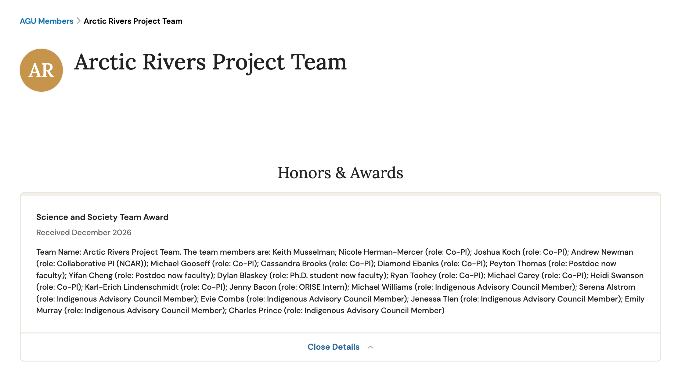

Arctic Rivers Project Team Honored with AGU Science and Society Team Award
Yifan is part of the Arctic Rivers Project Team named a recipient of the American Geophysical Union's (AGU) Science and Society Team Award for five years of hydrologic science built jointly with Indigenous communities across the Alaska and Yukon River basins.
AGU presents the Science and Society Team Award annually to a team of two or more people who combine scientific and community expertise to produce research that is actionable, equitably developed, and sustained over time.
Yifan joined the Arctic Rivers Project as a Postdoctoral Researcher and worked on land surface and climate modeling, applying the Community Terrestrial Systems Model across Alaska and the Yukon River Basin to push hydrologic modeling toward results that are useful to the people who depend on the Yukon River. Yifan also enjoyed the coproduction of knowledge with Indigenous communities as central to how he believes science should be done.
